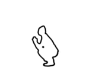
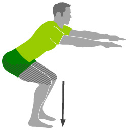
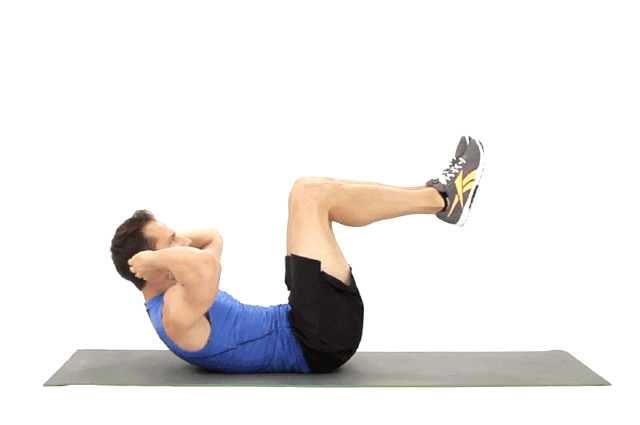
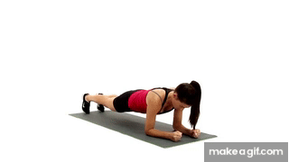

Get Ready Folks, Start your Journey with us.
Full Body Workout
To do a squat, stand with your feet slightly greater than shoulder-width apart and your toes pointing ahead. Slowly descend, bending through the hips, knees and ankles. Stop when your knees reach a 90-degree angle. Then return to the starting position.
 To do a push-up you are going to get on the floor on all fours, positioning your hands slightly wider than your shoulders. Don't lock out the elbows; keep them slightly bent. Extend your legs back so you are balanced on your hands and toes, your feet hip-width apart.
To do a crunch, Lie down on your back. Plant your feet on the floor, hip-width apart. Bend your knees and place your arms across your chest. Contract your abs and inhale. Exhale and lift your upper body, keeping your head and neck relaxed. Inhale and return to the starting position.
Stand with your feet shoulder-width apart, arms at your sides. Step your right foot forward one to two feet, keeping your torso upright, so that your knees are over your toes. Bend your right knee to a 90-degree angle with your right thigh parallel to the floor. Pushing through the heel of your right foot and shifting your weight to your left foot, step your right foot back to starting position. Repeat on the other side.

Lye down flat on the ground. Place your elbow and legs flat (like Push-ups). Push your body upward and keep your chin tight to your neck. Hold your position for 10 seconds. Bring your body downwards and continue this 3 times and then take a break.
